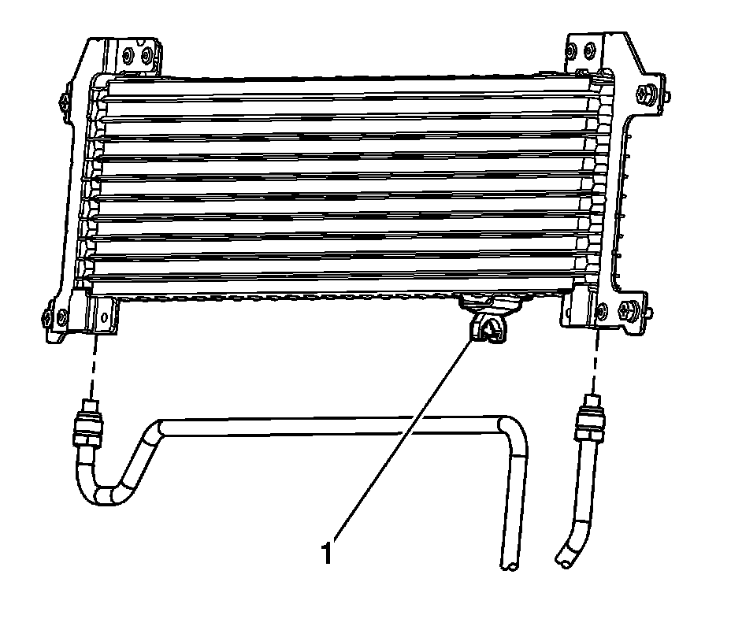
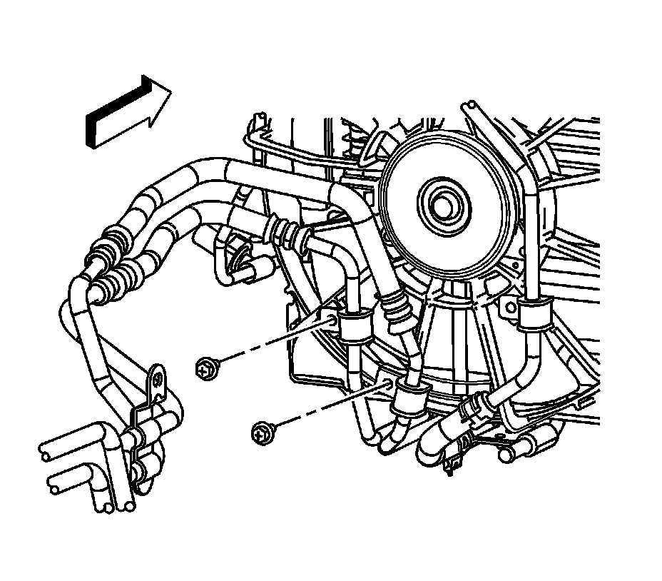

Transmission Fluid Cooler Pipe Replacement - Front
Transmission Fluid Cooler Pipe Replacement - Front
Tools Required
* J 39400-A Halogen Leak Detector
* J 44827 Transmission Cooler Quick Connect
Removal Procedure
Important: It is not necessary to discharge the refrigerant from the A/C system during auxiliary transmission oil cooler (TOC) front line replacement.
Remove the A/C condenser mounting bolts and reposition the condenser.

1. Reposition the condenser to access the auxiliary transmission oil cooler lines. Refer to Condenser Replacement (Heavy Duty Cooling) (Condenser Replacement (Heavy Duty Cooling))Condenser Replacement (Standard Cooling) (Condenser Replacement (Standard Cooling)) .
2. Disconnect the transmission oil cooler (TOC) lines from the TOC.
3. Disconnect the TOC line from the TOC retainer clip (1).

4. Remove the TOC to cooling fan shroud bolts.

5. Remove the LH front wheel. Refer to Tire and Wheel Removal and Installation (Service and Repair) .
6. Remove the LH front splash shield retainers.
7. Remove the LH front splash shield.
8. Using the J 44827 , disconnect the front TOC lines from the rear TOC lines.
9. Remove the front TOC lines.
Installation Procedure
1. Install the front TOC lines.
2. Connect the front TOC lines to the rear TOC lines.
3. Install the LH front splash shield.
4. Install the LH front splash shield retainers.
5. Install the LH front wheel. Refer to Tire and Wheel Removal and Installation (Service and Repair) .
Notice: Refer to Fastener Notice (Fastener Notice) .
6. Install the TOC to cooling fan shroud bolts.
Tighten the bolts to 6.5 N.m (58 lb in).
7. Connect the TOC line to the TOC retainer clip (1).
8. Connect the transmission oil cooler (TOC) lines to the TOC.
Tighten the fittings to 20 N.m (15 lb ft).
9. Reposition and reinstall the condenser. Refer to Condenser Replacement (Heavy Duty Cooling) (Condenser Replacement (Heavy Duty Cooling))Condenser Replacement (Standard Cooling) (Condenser Replacement (Standard Cooling)) .